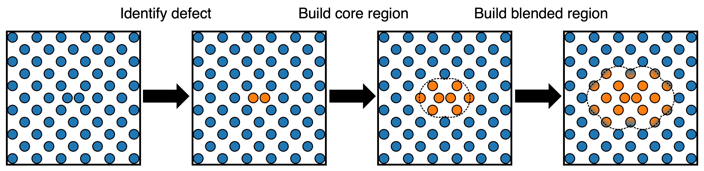

Package Overview
This package extends LAMMPS, adding functionality for efficient QM/MM style force-mixing of two different pair_styles. It does this through the use of two commands; fix mlml and pair hybrid/overlay/mlml. There is also a third command fix langevin/mlml, which can be used for maintaining the temperature of mixed-systems over long timescales without disrupting any key dynamics.
Command overview
fix mlml: Used to allocate and track which atoms should be evaluated by which potential. This has a kokkos implementation which allows mixing of GPU accelerated pair_styles.
pair hybrid/overlay/mlml: Used to mix together different pair_styles in the different spatial regions of the simulation domain designated by fix mlml. This has a kokkos implementation which allows mixing of GPU accelerated pair_styles.
fix langevin/mlml: Used to apply a langevin thermostat to a specific spatial region of the simulation domain designated by fix mlml.
Tested Compatible ``pair_style``s
ML-MIX is designed to wrap any LAMMPS pair_style that is compatible with pair_style hybrid. However, incompatibilities can still arise—especially when a pair_style does something non-standard. Such issues may manifest as segmentation faults.
A common source of incompatibility is when a pair_style performs an MPI communication during its compute() routine (e.g., EAM). This communication acts as a synchronization point, forcing all processors to halt. In ML/ML simulations, this can severely bottleneck performance and render the simulation impractical.
CPU ``pair_style``s
Tested and compatible (non-KOKKOS):
lj/cutpaceuf3snapsymmetrix/mace(inno_mpi_message_passingmode)table
Tested and currently incompatible:
EAMand all derivativessymmetrix/mace(inmpi_message_passingandno_domain_decompositionmode)allegromliappy mace
GPU ``pair_style``s
Tested and compatible (KOKKOS variants):
lj/cut/kksymmetrix/mace/kk(inno_mpi_message_passingmode)snap/kk
Tested and currently incompatible:
uf3/kksymmetrix/mace(inmpi_message_passingandno_domain_decompositionmode)
Notes and Contributions
There are likely many other compatible ``pair_style``s that have not yet been tested. If you identify one, please get in touch with:
Fraser Birks (fraser.birks@warwick.ac.uk)
It is also possible that currently incompatible pair_style``s could be made compatible with minor modifications (e.g., adding ghost atoms and disabling MPI messaging in ``EAM). If this is important for your use case, please contact Fraser or raise a GitHub issue.
If you believe that a pair_style should be compatible (for instance, because it avoids MPI in compute()), and suspect that ML-MIX may be at fault, please also raise a GitHub issue.
Why Use This Package?
As machine-learned interatomic potentials get larger and more accurate, they are becoming increasingly expensive in evaluation.
In the realm of materials science, it is common to have systems in which regions of complex chemistry (where highly accurate potentials are required) are surrounded by large regions of simple chemistry (where a simpler potential is sufficient).
This package allows users to mix together different pair_styles in different spatial regions of the simulation domain, allowing for the use of expensive, accurate potentials only where they are needed.
It does this in a way which does not edit the pair_styles themselves, minimises overhead and is compatible with built in LAMMPS parallelisation strategies.
Selecting which atoms to evaluate expensively can be done two ways; either by specifying an immutable group of seed atoms, or by using the output vector of a different fix to classify. Through the fix implementation, a user can use built in LAMMPS criteria for classification (e.g, coordination analysis, common neighbour analysis) or could straightforwardly plug in their own custom fix.
Auxillary code is provided to allow for the fitting of constrained, lightweight linear ACE and UF3 models to approximate an expensive potential in a small region of potential energy space.
How it works: Data flow
Data for which potentials are to be evaluated are stored in two user-defined property/atom arrays: i2_potential and d2_eval.
i2_potentialis an integer array which specifies which potential(s) should be evaluated for each atom.d2_evalis a double array which specifies the proportion of the force which should be evaluated by each potential for each atom.
CPU usage
At the start of every input script (CPU mode), these two arrays must be initialised with:
fix eval_pot all property/atom i2_potential 2 ghost yes
fix eval_arr all property/atom d2_eval 2 ghost yes
KOKKOS (GPU) usage
When using Kokkos-accelerated pair styles, these must instead be defined in a device-compatible form using double vector property/atom fields:
fix ml-mix-arrs all property/atom d_potential_1 d_potential_2 d_eval_1 d_eval_2 ghost yes
Here:
d_potential_1andd_potential_2replace the columns ofi2_potentiald_eval_1andd_eval_2replace the columns ofd2_eval
Notes
The first column of each array corresponds to potential 1, and the second corresponds to potential 2.
These values can be dumped at any point in the simulation using the
dump customcommand, allowing users to visualise which atoms are being evaluated by which potential.
How it works: Region building
Region building in ML-MIX is based on an underlying assumption that there is a small subset of atoms in the overall simulation domain which should be modelled by potential 1 (region 1) and a remainder which should be modelled by potential 2 (region 2). The fix mlml command is responsible for constructing these regions. A user specifies some criteria that is used to find seed atoms; these are the atoms that region 1 is built around.
The seed atom criteria can take two forms, either a fixed set of atoms, specified by a lammps group at the start of the simulation, or a dynamic set of atoms, specified by applying an inequality critera to the output per-atom vector of another seperately defined fix.
Once seed atoms are found, regions are built around the seed atoms. This can be thought of as a process of forming the union of concentric spheres around each seed atom. The innermost sphere is the core region, the next sphere is the blending region and the outermost sphere is the buffer region. Different values of i2_potential and d2_eval are assigned to atoms in each of these regions:
Core region: i2_potential[0][i] = 1, d2_eval[0][i] = 1.0. (i.e, the atom is evaluated by potential 1 with 100% of the force contributing).
Blending region: i2_potential[0][i] = 1, d2_eval[0][i] = p1, where p1 is a linear function of the distance from the atom to the nearest seed atom that decays from 1.0 to 0.0 as the distance increases. (i.e, the atom will be evaluated by potential 1 with a proportion of the force determined by the distance from the atom to the nearest seed atom).
Buffer region: i2_potential[0][i] = 1, d2_eval[0][i] = 0.0 (i.e, the atom is evaluated by potential 1 with 0% of the force contributing - see the section below on force mixing to understand why a buffer region is necessary).
Outside the buffer region: i2_potential[0][i] = 0, d2_eval[0][i] = 0.0 (i.e, the atom is not evaluated by potential 1).
For potential 2, the same process is followed. Note that many atoms which will be evaluated by potential 1 will also be evaluated by potential 2 (i.e, those which lie in the buffer of 1, the blending region and the buffer of 2), but with d2_eval[1][i] = 1 - d2_eval[0][i].
There are two key timescales associated with fix mlml, the timescale associated with rebuilding regions (taking the fixed seed atoms and re-determining the core, blending and buffer regions based on new positions), and (in the case of dynamic seed atoms) the timescale associated with querying the output vector of the fix to classify new seed atoms.
Time Decay Hysteresis
New in version 0.2.0, time decay hysteresis introduces a mechanism that allows atoms to smoothly blend in and out of the expensive potential region over time, rather than switching evaluation states instantaneously.
Time decay hysteresis is controlled by two characteristic times:
τ_in: the characteristic time for an atom to ramp into region 1.
τ_out: the characteristic time for an atom to ramp out of region 1.
This ramping is applied to the d2_eval[0][i] factor, which controls the contribution of the expensive potential to the final force. Instead of updating d2_eval based solely on geometric distance to the nearest seed atom, the final contribution is computed according to an exponential decay controlled by the respective time constants. See fix mlml for more details.
How it works: Force mixing
Warning
Pressure is not well defined In force-mixing, cell pressures are not well defined. LAMMPS will output pressure values, but (for now) these numbers are essentially meaningless. For this reason, you should not run NPT simulations.
Whilst fix mlml is responsible for assigning atoms to regions and controlling force contributions, the pair hybrid/overlay/mlml command is responsible for actually evaluating the forces. The pair hybrid/overlay/mlml command is a variant of the pair hybrid/overlay command, which allows for the use of multiple pair_styles in one simulation. The pair hybrid/overlay/mlml command constructs the full force vector through force-mixing, a method commonly used in QM/MM simulations.
The assignment of pair styles to type pairs is made via the pair_coeff command. For hybrid/overlay/mlml, an additional numeric argument must be specified after the sub-style name, which can either be 1 or 2. This value indicates the region to which pair_style should be applied. As many sub-styles can be specified as desired, and multiple sub-styles can be assigned to the same regions.
hybrid/overlay/mlml differs from hybrid/overlay in two key ways. Firstly, it prunes the atom list for each pair_style evaluation to only include the necessary atoms according to i2_potential. Secondly, once forces have been evaluated, it constructs the full force vector by modifying the forces evaluated by each pair_style according to d2_eval.
To understand why the buffer region is necessary and understand what size it needs to be for local potentials, consider a set of atoms \(\Lambda_{k}\), which is a subset within a larger domain \(\Lambda_{k} \subseteq \Lambda\). To attain correct forces on atoms in \(\Lambda_{k}\) with a local potential \(\Phi_{k}\) that has a cutoff radius \(r_{\mathrm{cutoff}}\). The force on atom \(i \in \Lambda_{k}\) can be written in terms of local energies as
where \(E^{k}_{j}\) represents the local energy of atom \(j\) as evaluated by \(\Phi_{k}\). Due to the local nature of the potential, we only need to evaluate \(E^{k}_{j}\) for atoms that lie within \(r_{\mathrm{cutoff}}\) of atom \(i\). For an atom that lies on the edge of \(\Lambda_{k}\), it is clear that attaining the correct force requires evaluation of atoms up to \(r_{\mathrm{cutoff}}\) outside \(\Lambda_{k}\). Defining the distance between two atoms \(i, j\) as \(d(i, j)\), the buffer region \(\Lambda_{k\text{-buffer}}\) is given by
This expression tells us that to get exactly correct forces on atoms in the blending region, we need to evaluate the local energy gradients of atoms up to \(r_{\mathrm{cutoff}}\) outside it.
Mitigating energy drift
A consequence of force-mixing is that simulations do not conserve energy. The energy drift rate of a simulation is determined by three things:
How closely the two potentials approximate each other (closer -> less drift).
The width of the blending region (wider -> less drift).
The overall size of the interface area between potentials (larger -> more drift).
For potentials which are fit to match closely, energy drift is usually in the ballpark of a few K/hundred ps. This is small enough that it can be corrected for by the action of a weak thermostat. The fix langevin/mlml command is provided for this purpose. It is a variant of the fix langevin command, which applies a langevin thermostat to a specific ML-MIX region of the simulation domain. In its current implementation, it is a standard langevin thermostat with the random forces multiplied by the d2_eval vector.